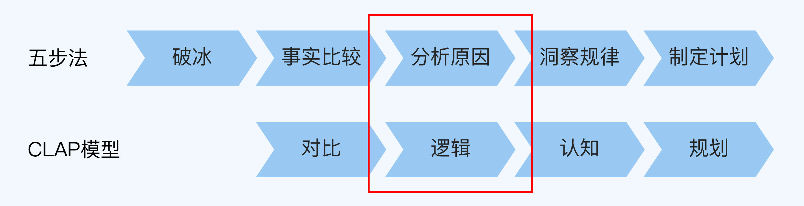
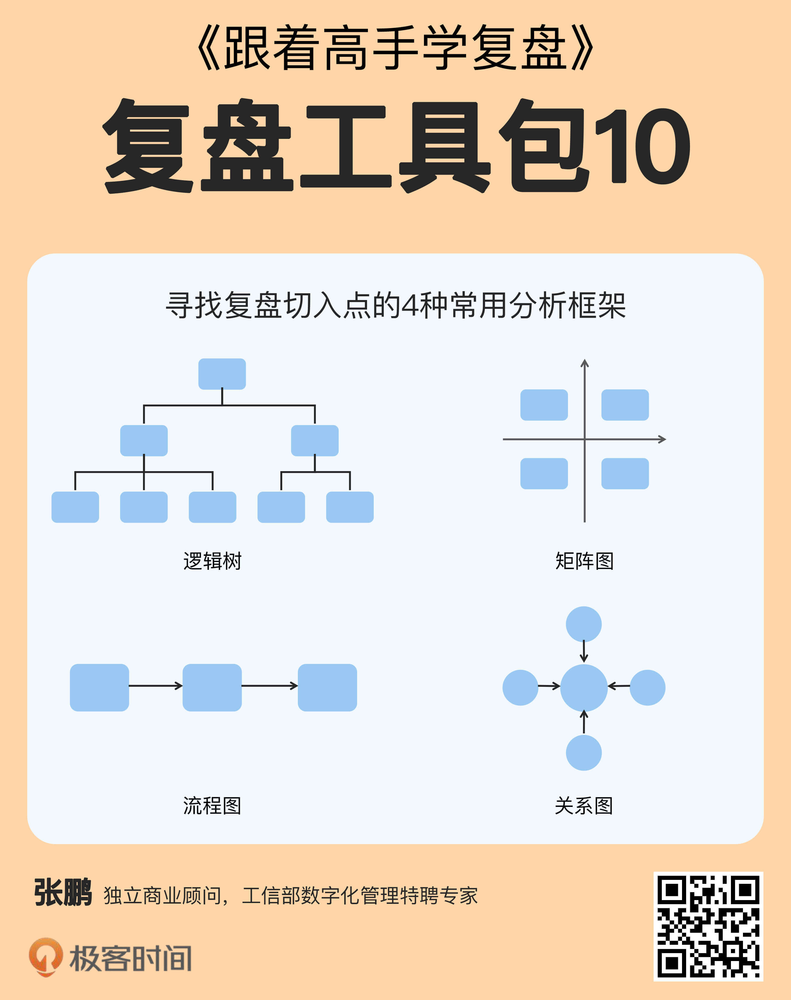
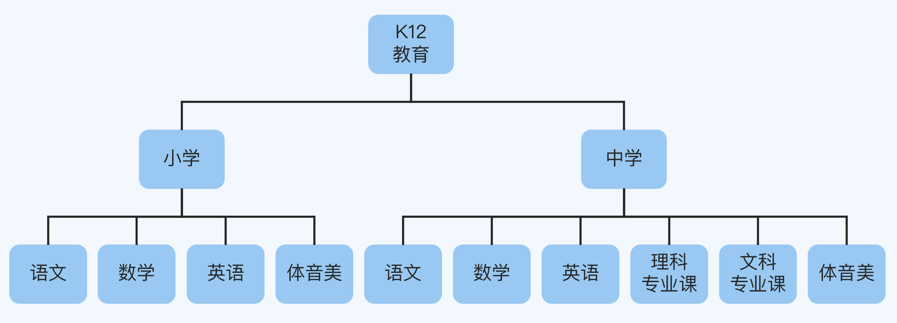
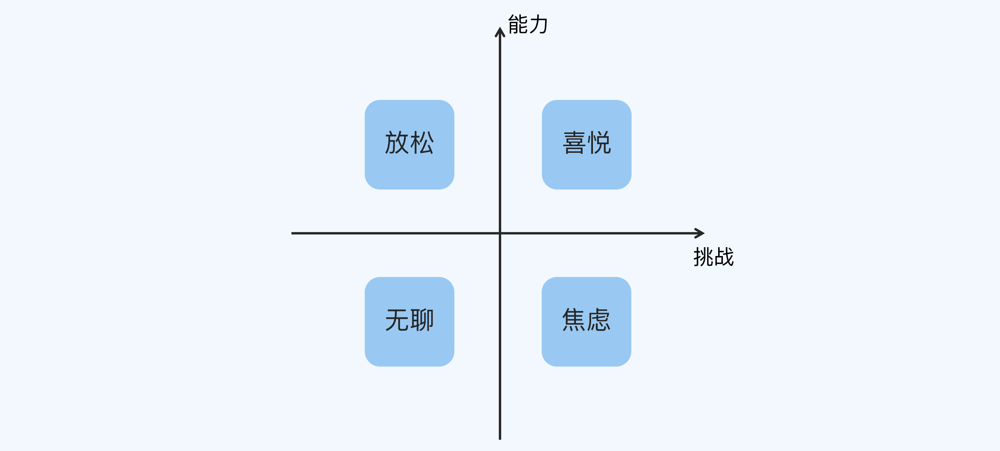
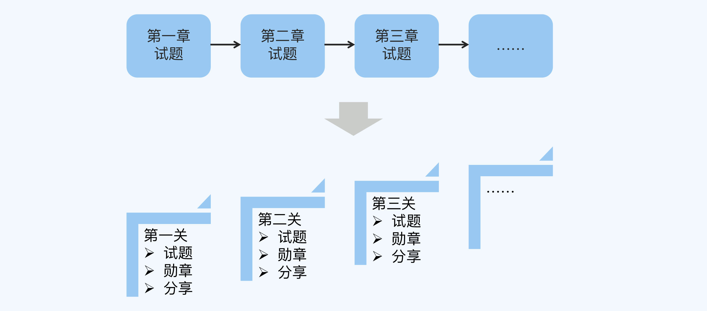
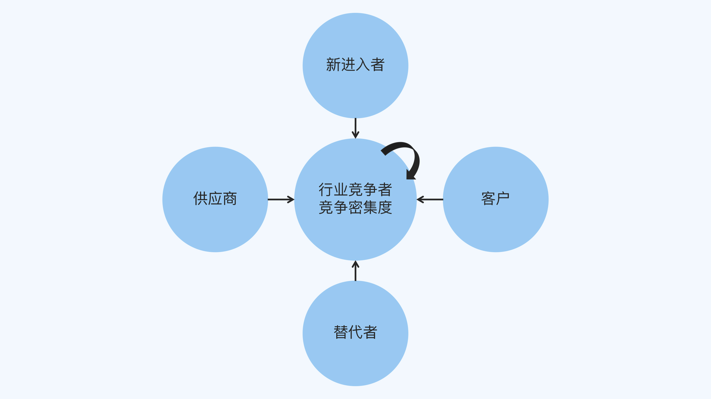
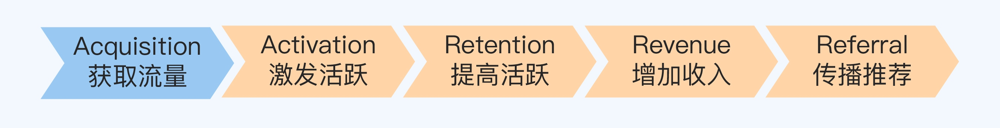

- 00 开篇词 为什么每个人都应该学会复盘？.md.html
- 01 CLAP模型：一个优秀的复盘模型是什么样的？.md.html
- 02 OPTM框架：怎么使用CLAP模型？.md.html
- 03 教练技术：怎么做复盘才能化解冲突？.md.html
- 04 制度和文化：怎么营造复盘环境？.md.html
- 05 三角法：怎么组建复盘团队？.md.html
- 06 MECE原则：怎么准备复盘资料？.md.html
- 07 五步法：如何召开一次高效的复盘会议？.md.html
- 08 事实比较：如何快速比较目标与结果？.md.html
- 09 分析原因：梳理逻辑时怎样找到切入点？.md.html
- 10 洞察规律：怎样更新认知才能找准发力点？.md.html
- 11 OKR：怎样根据复盘结论制定计划？.md.html
- 12 Double Check：怎么检查评估一次复盘的效果？.md.html
- 13 案例导学：我是怎么帮助企业做复盘的？.md.html
- 14 战略升级：5年增长100倍的跨境电商做对了什么？.md.html
- 15 业务关键点：改进一个点业绩增长50%？.md.html
- 16 组织结构设计：变动一个职位，就能带来100万_月的增量吗？.md.html
- 17 高效赋能：怎么建立流程才能把人效提升3倍？.md.html
- 18 人才培养：怎么把人才转化成实际生产力？.md.html
- 19 预算制定：人头和财务预算到底怎么定？.md.html
- 春节荐书（一）《原则》：在不确定中找到确定.md.html
- 春节荐书（二）《人类简史》：故事的力量.md.html
- 结束语 复盘，见天地见众生见自己.md.html
- 捐赠
09 分析原因：梳理逻辑时怎样找到切入点？
你好，我是张鹏。
上一讲，我为你介绍了快速比较结果和目标的方法。完成事实比较之后，我们就来到了分析原因这一步，它正好对应CLAP模型的逻辑环节。

分析原因的能力有多重要呢？我给你讲个故事吧。
M公司曾经是我的客户，一开始做了一个很normal的互联网教育平台（高仿国内某知名教育平台Y），但是在融资的时候，除了一些几乎不懂互联网又不想错过风口的纯粹财务投资人有兴趣之外，几乎没有真正的战略投资人愿意参与进来。
于是，M公司的CEO请我来帮他做复盘。
我问CEO：“你们到底希望什么样的投资人进来？”
他说：“当然最好是像BAT这样的战略投资人进来呀。”
我问：“为什么？”
他说：“现在流量越来越贵，融再多的钱，最后还是给这些流量入口了，还不如让他们成为战略合作伙伴，钱多钱少都不是问题。”
我接着问：“怎么让BAT进来呢？”
CEO回答：“要有好的经营数据啊。”
我问：“哪些经营数据是最重要的呢？”
CEO答道：“每个部分都很重要啊。”
这是一个典型的深挖式教练提问过程，一层层递进，直到找出答案或者对方无法回答为止。交流到这里，我基本可以判断，CEO还没有找到解决问题的关键点。
很多人都和这位CEO有同样的感觉：业务分析模型多少也知道一点，比如增长黑客的AARRR漏斗模型，但是用起来不太称手，分析问题的时候总觉得找不到切入点（或者说关键点）。
如果不会分析，事实了解得再清楚也没有用。这一讲，我就会教你怎么提升复盘时分析问题原因的能力。
逻辑推理：演绎与归纳
分析原因需要先梳理逻辑。逻辑是什么？简单来说，就是事物之间的因果关系。
怎么从事实（也就是目标和结果的比较）中发现业务的因果关系呢？基本的逻辑推理方法有两种，演绎法（Deductive Reasoning）和归纳法（Inductive Reasoning）。
演绎法就是经典的三段论，比如：
“所有的人都一定会死”，这是大前提。
“苏格拉底是人”，这是小前提。
“所以苏格拉底一定会死”，这是结论。
大前提成立，小前提正确，自然能够得出结论。
而归纳法是这样的：
现象：A死了，B死了，C死了，D死了……我们观察到的所有人，最后都会走向死亡。
结论：所有的人都一定会死。
很明显，演绎法是从一般到个别，而归纳法是从个别到一般。演绎论证得到的是必然的结论，而归纳论证只能得出可能的结论。最典型的就是“黑天鹅”理论，即使你见过100万只白天鹅，也不能保证你见的下一只还是白天鹅，这就是归纳法的局限。
刚才提到的M公司的CEO朋友，他一开始的思路差不多也是归纳法：
现象：平台Y成功融资了，其他几个类似的平台也成功融资了。
结论：这一类平台都可以成功融资。
“你这样做能挣钱，那么我这样做也能挣钱”，这种思路几乎也是国内2VC式创业的通病，所以这类公司生命周期短，也就不奇怪了。
这也是现在越来越多的人重视复盘的原因。总结只是对过去的归纳，光靠总结很可能分析不出问题的关键。
现在我们回到M公司的故事。先不谈战略规划、核心团队以及经营数字等问题，我们按照融资的逻辑，粗略地梳理一下业务的基本面：
- 首先评估业务所在的市场有多大。
- 然后看优劣势分析。
- 再看价值创造链是怎么做的。
- 最后看竞争对手之间的关系。
接下来，在说清楚这几点的同时，我也会为你分享4种常用的分析框架。- 
分析框架
逻辑树
第1种分析框架是逻辑树，基于MECE原则把主题逐层分解（第6讲详细介绍过）。
M公司是做K12教育的，说穿了就是做提分的。我们想看看市场上还有哪些大的“价值洼地”存在，于是一起画了这样一张图：

在中学部分，有学而思等巨头，在产品和模式没有出现颠覆式创新的情况下，M公司几乎没有任何胜算，所以中学部分可以去掉。
在小学部分，体音美一类不属于K12用户愿意付费的刚需，继续去掉，还剩下语数英。
相对英语和数学，语文提分并不容易，去掉。
小学数学并不难，不需要课外辅导，去掉。
最后，就只剩下了小学英语。
矩阵图
第2种分析框架是矩阵图。其实我们常用的SWOT、波士顿矩阵和安索夫矩阵等都是矩阵图， 矩阵图法就是从多维问题的事件中，找出成对的因素，排列成矩阵图，然后根据矩阵图来分析问题，确定关键点。
M公司确定了小学英语这个方向，但是英语也分听、说、读、写，M公司在这几个方面并没有特别的产品或者服务。
公司的主营业务往往都是人与事的结合，于是，我们并没有从产品本身着手分析，而是从M公司创始团队本身的基因切入（这一点特别重要，分析的时候完全可以从不同的角度进行切入）。
在沟通过程中，我发现M公司的创始人团队有一个共同点——他们都是超级游戏迷。于是我们探讨了一下，小学阶段的教育最重要的是什么？
分数？不是，分数只是呈现学习效果的形式。
知识？也不太是，小学的知识密度不高，难度也不大。
学习习惯？有点接近了，也不全是。
……
最后，当我们把答案聚焦到“培养孩子对学习的兴趣”的时候，几乎所有人都举手同意了。
好，我们就从这一块着手。我抛出了一个简化版的“心流”的矩阵图（坐标图）：

从矩阵图中，我们可以看出：
团队要想办法，让孩子的学习处在从由低到高的挑战难度排列的过程中，用类似游戏的方式来提升能力。不要重复低挑战难度的考题、训练记忆，也不一定要完全对照教材的章节顺序来安排内容。
做完这一步，产品内容就基本上有了头绪。
流程图
第3种分析框架是流程图，它可以帮助我们在做价值创造的时候找到着力点和优势所在。
M公司选择了用类似游戏的方式来帮助孩子提升，那么怎样才能把游戏“好玩上瘾”的体验嵌入到学习过程中去呢？
因为团队都是骨灰级游戏玩家，我们在复盘中仔细研究了游戏的机制，发现了一些共同点：
- 快速上手：再复杂的游戏，一开始为了吸引玩家，都会提供一个非常友好的入口，让几乎零基础的人也能够快速上手。
- 即时反馈：玩家在游戏中做出的任何一项操作，都会立刻产生视觉化、听觉化、数据化成绩效果。
- 通关：所有的游戏会为玩家提供一个阶段性小关卡，总能让玩家找到一个很快就要完成的小目标。在完成这个小目标之后，就会又激活一个，并且越来越难，无限不循环。
- PK：让玩家在对决中找到输赢带来的快感，赢的会上瘾，输的也不会甘心。
- 成就：让玩家有一种自我能力的确认，积分和青铜、白银、黄金、钻石等级标识显示也和别人不一样，是一种身份的象征。让玩家有一种自己独一无二的荣耀感。
- 炫耀：取得成就之后，一定要有可分享的渠道，尤其是在熟悉的玩家之间进行炫耀。
……
根据游戏的特点，我们将所有的试题按照挑战难度重新编排，并按照游戏重新设计流程，我们看一下这个产品体验流程的前后对比：

可以看出，在流程中，课程的“章节”变成了游戏的“关卡”，原有的内容只有试题，而在后面的设计中：
- 内容包括试题、勋章和分享海报。
- 每一关的难度在逐步递增。
- 海报的分享很容易拉进新的玩家（使用APP的同学）。
- 如果其他玩家不服气，可以选择“PK模式”。
……
当M公司改进了APP，把学习变成了游戏之后，甚至发生了这样的故事：某个孩子每天在APP上玩刷题，半个月从学渣变学霸的，不但全程都不需要父母管，而且最后还把全年级的同学都拉了进来。
关系图
第4种框架是关系图，主要用于分析业务或者项目所在的环境。业内竞争很容易被看见，而更大范围的外部因素，有时候是业务成长或者萎缩的趋势性因素。
经过一段时间的运营，M公司发现实际效果比预期的还要好：因为游戏好玩有趣，用户的在线时长增加了；而且由于勋章的炫耀和拉同学PK的设计，用户通过自发传播引流实现了快速增长，跟直接投广告相比效率更高、成本更低。
到了这个阶段，我们就要看一下M公司在整个生态环境中的发展态势，这时候可以用到关系图，比如经典的波特五力模型：

- 客户角度：无论是花时间的孩子，还是花钱的家长，接触M公司的产品之后都很喜欢，觉得超出期待，并没有特别关心价格。
- 教育供应商角度（主要是版权方和老师）：由于重组试题安排，对传统版权供应商依赖度不大，而“去名师化”的设计让降低了未来的成本，又打开了产品设计的空间。
- 替代者和新进入者角度：BAT等大厂有机会进入这个“游戏化教学云服务”的领域吗？可能性不大，因为这些做好教育平台需要太多的专业经验了，只要价格合适，大厂更愿意投资或者收购，而不是直接竞争。
- 业内竞争角度：业内多数巨头还在采用买流量、推名师的模式在玩，品牌一旦形成，如果要掉头，相当于把原来花重金打造的用户心智全盘否定，跟进的可能性比较小。
这样看来，M公司占据了总成本领先和定位游戏化教育训练心智这两个领先竞争战略高地，基本上锁死了竞争对手的战略空间，而且在相当长的一段时间内，这个业务还有巨大的成长空间。
后来M公司找到了百度的投资部，百度看完M公司的运营数据，只用了一天就决定投了。
现在我们再来看AARRR模型。M公司已经解决了5个环节中的4个环节，都非常有亮点和特色，百度正好是流量巨大，寻找变现渠道，天作之合！

小结
这一讲，我通过M公司的产品定位和业务转型的案例，讲解了在分析原因时常用的2种逻辑推理方法和4种逻辑分析框架。现在，我们回顾一下重点内容。
- 想要发现业务的因果关系，可以通过演绎法和归纳法。演绎论证得到的是必然的结论，而归纳论证只能得出可能的结论，存在一定局限性。
- 常用的逻辑分析框架包括逻辑树、矩阵图、流程图和关系图。
- 逻辑树可以帮助我们应用MECE原则细分复盘主题的每个分支；矩阵图可以聚焦某个业务板块，找出需要聚焦的重点；流程图可以帮助我们在做价值创造的时候找到切入点和自身的优势所在；关系图可以让我们在更大的生态下分析出竞争策略。
思考题
这就是今天的全部内容，最后留一道思考题给你吧。你使用过这4种分析框架吗，有什么问题或者心得呢？
欢迎你把答案写到留言区，和我一起讨论。
© 2019 - 2023 Liangliang Lee. Powered by gin and hexo-theme-book.